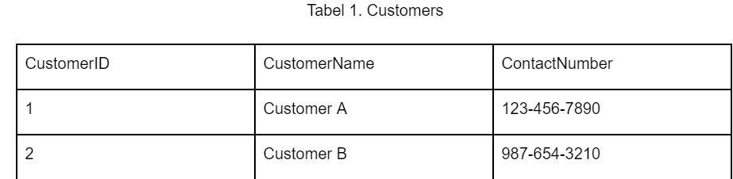
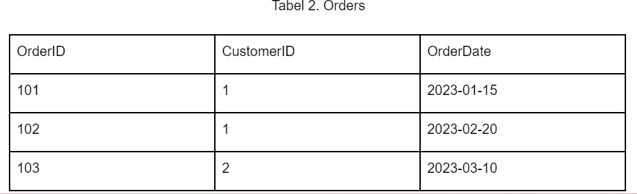
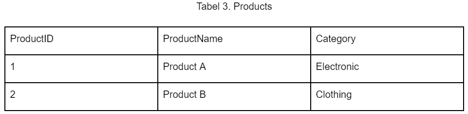
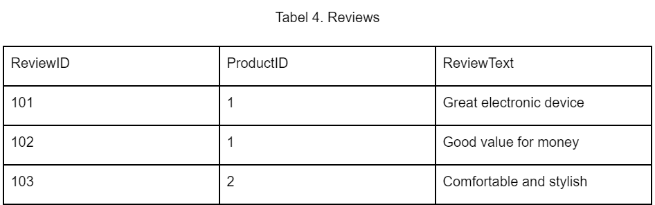
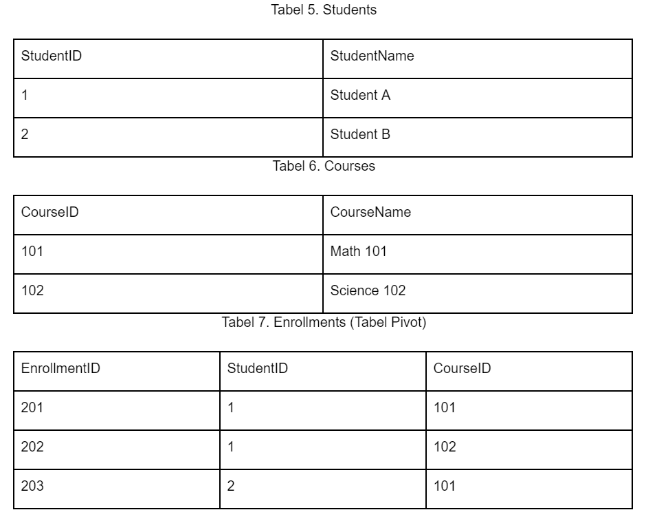
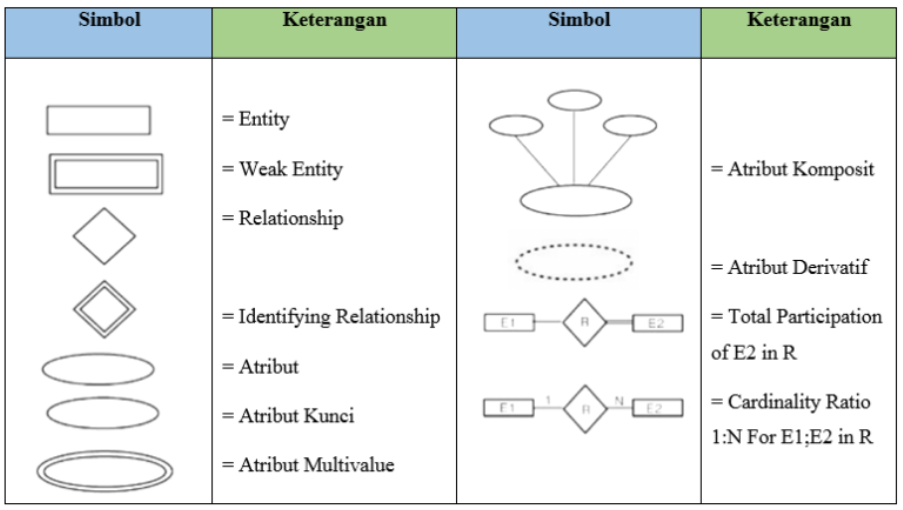
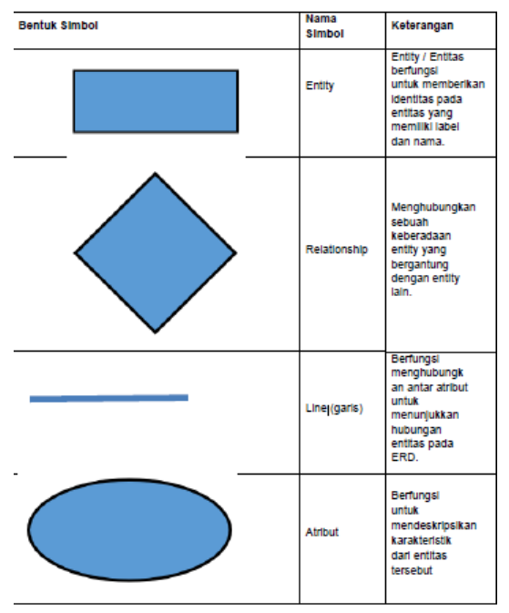
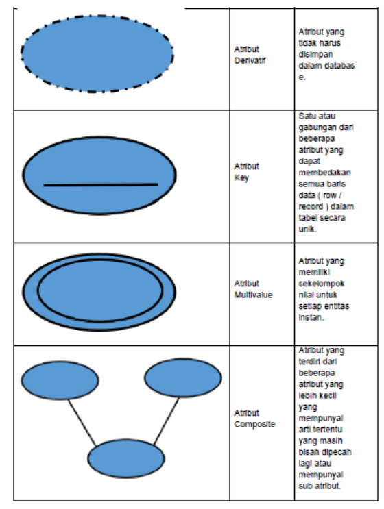

PEMODELAN DATA : HUBUNGAN, ERD
Dalam konteks basis data, hubungan (relationship) dan foreign key adalah dua konsep yang berbeda, tetapi mereka saling terkait dan penting untuk memahami struktur dan integritas data dalam basis data. Berikut ini adalah definisi dan contoh-contoh dari kedua konsep tersebut.
1. Hubungan (Relationship)
Hubungan (relationship) dalam konteks basis data merujuk pada cara data dalam tabel-tabel yang berbeda terkait atau berinteraksi satu sama lain. Hubungan ini mencerminkan bagaimana data dalam tabel-tabel tersebut saling terkait dan bagaimana informasi dapat diekstraksi dari tabel-tabel tersebut untuk memenuhi kebutuhan pengguna.
Ada beberapa jenis hubungan yang umum ditemukan dalam basis data:
a. One-to-One (1:1):
Dalam hubungan one-to-one, satu baris dalam satu tabel berhubungan dengan satu baris dalam tabel lain. Ini adalah jenis hubungan yang jarang ditemui dan biasanya digunakan dalam situasi khusus. Contohnya, tabel "Person" dapat memiliki hubungan one-to-one dengan tabel "Passport," di mana setiap orang memiliki satu paspor.
b. One-to-Many (1:N):
Dalam hubungan one-to-many, satu baris dalam satu tabel berhubungan dengan banyak baris dalam tabel lain. Contohnya, tabel "Author" dapat memiliki hubungan one-to-many dengan tabel "Books," di mana satu penulis dapat memiliki banyak buku yang terkait dengannya.
c. Many-to-One (N:1):
Dalam hubungan many-to-one, banyak baris dalam satu tabel berhubungan dengan satu baris dalam tabel lain. Ini adalah hubungan yang merupakan kebalikan dari one-to-many. Contohnya, tabel "Books" dapat memiliki hubungan many-to-one dengan tabel "Publisher," di mana banyak buku diterbitkan oleh satu penerbit.
d. Many-to-Many (N:N):
Dalam hubungan many-to-many, banyak baris dalam satu tabel berhubungan dengan banyak baris dalam tabel lain. Contohnya, tabel "Students" dapat memiliki hubungan many-to-many dengan tabel "Courses," di mana banyak mahasiswa dapat mendaftar untuk banyak kursus, dan sebaliknya.
Hubungan dalam basis data membantu mengorganisir data dengan cara yang memungkinkan pengguna untuk mengambil informasi yang diperlukan dengan efisien. Untuk mengimplementasikan hubungan dalam basis data, biasanya digunakan konsep foreign key (kunci asing) yang menghubungkan entitas atau baris dalam tabel satu dengan tabel lainnya.
Penting untuk merancang hubungan dengan baik dalam basis data agar data tetap konsisten, dan operasi seperti penambahan, pembaruan, dan penghapusan data dapat dilakukan dengan benar. Selain itu, pemeliharaan integritas referensial dan pengoptimalan query juga menjadi pertimbangan penting dalam merancang hubungan dalam basis data. Berikut ini adalah beberapa contoh hubungan (relationship) dalam basis data beserta skema tabelnya:
Contoh 1 : Hubungan One To Many (1 : N)


Dalam contoh ini, tabel "Customers" memiliki hubungan one-to-many dengan tabel "Orders." Setiap pelanggan (Customer) dapat memiliki banyak pesanan (Orders), tetapi setiap pesanan hanya terkait dengan satu pelanggan.
Contoh 2 : Hubungan Many to One (N : 1)


Dalam contoh ini, tabel "Reviews" memiliki hubungan many-to-one dengan tabel "Products." Banyak ulasan (Reviews) dapat terkait dengan satu produk (Product), tetapi setiap produk hanya terkait dengan satu ulasan tertentu.
Contoh 3 : Hubungan Many to Many

Dalam contoh ini, tabel "Enrollments" digunakan sebagai tabel pivot untuk menghubungkan banyak mahasiswa (Students) dengan banyak kursus (Courses). Ini adalah contoh hubungan many-to-many, di mana banyak mahasiswa dapat mendaftar untuk banyak kursus, dan sebaliknya. Semua contoh ini menggambarkan berbagai jenis hubungan yang dapat ada dalam basis data, dan penggunaan yang tepat dari kunci asing (foreign key) dapat digunakan untuk mengimplementasikan hubungan ini dalam basis data.
2. Pemodelan Hubungan Entitas (ERD)
Pemodelan Hubungan Entitas (Entity Relationship Modeling), atau disingkat ERD, adalah teknik yang digunakan dalam desain basis data untuk menggambarkan hubungan antara berbagai entitas atau objek dalam sistem. ERD membantu menggambarkan struktur data dan bagaimana entitas berinteraksi satu sama lain dalam basis data. Berikut adalah beberapa konsep utama dalam ERD:
- Entitas (Entity): Entitas adalah objek, konsep, atau elemen utama yang memiliki atribut yang menggambarkan ciri-ciri atau properti mereka. Misalnya, dalam sistem manajemen perguruan tinggi, entitas mungkin mencakup "Mahasiswa," "Dosen," dan "Mata Kuliah."
- Atribut (Attribute): Atribut adalah properti atau karakteristik yang menggambarkan entitas. Setiap entitas memiliki sejumlah atribut yang berkaitan dengannya. Misalnya, entitas "Mahasiswa" dapat memiliki atribut seperti "Nama," "NIM," "Alamat," dll.
- Hubungan (Relationship): Hubungan menggambarkan bagaimana entitas berinteraksi satu sama lain. Hubungan ini bisa menjadi satu ke satu, satu ke banyak, atau banyak ke banyak. Contohnya, mahasiswa dapat mendaftar dalam banyak mata kuliah, yang menunjukkan hubungan banyak ke banyak antara "Mahasiswa" dan "Mata Kuliah."
- Kunci Utama (Primary Key): Kunci utama adalah atribut atau kelompok atribut yang unik mengidentifikasi setiap baris dalam entitas. Ini memastikan bahwa setiap entitas memiliki identifikasi unik. Sebagai contoh, "NIM" dalam entitas "Mahasiswa" bisa menjadi kunci utama.
- Kunci Asing (Foreign Key): Kunci asing adalah atribut dalam suatu entitas yang merupakan kunci utama dari entitas lain. Ini digunakan untuk menghubungkan dua atau lebih entitas dalam ERD. Misalnya, dalam entitas "Transaksi," "ID_Pelanggan" bisa menjadi kunci asing yang merujuk ke kunci utama "Pelanggan."
- Entitas Khususasi (Specialization): Ini adalah proses membagi entitas umum menjadi sub-entitas yang lebih spesifik. Misalnya, entitas "Kendaraan" dapat dibagi menjadi "Mobil" dan "Sepeda Motor."
- Agregasi: Agregasi adalah hubungan yang digunakan untuk menggambarkan entitas yang terhubung dengan entitas lain secara keseluruhan. Misalnya, dalam ERD sistem perpustakaan, "Penerbit" bisa menjadi entitas agregat yang terdiri dari banyak "Buku."
- Notasi ERD: ERD biasanya digambarkan dengan menggunakan notasi grafis yang terdiri dari entitas (kotak), atribut (elips), hubungan (garis dengan berbagai panah dan notasi), kunci utama (garis bawah atau ganda), dan kunci asing (garis putus-putus).
Contoh ERD adalah alat yang berguna dalam desain basis data karena membantu para desainer dan pengembang untuk memahami struktur data, hubungan antar entitas, dan kebutuhan basis data secara keseluruhan. ERD sering digunakan sebagai dasar untuk membuat skema basis data yang konkret dalam bahasa seperti SQL.
3. Simbol Entity Relationship Modelling (ERD)
ERD adalah singkatan dari "Entity Relationship Diagram" atau dalam Bahasa Indonesia sering disebut "Diagram Hubungan Entitas." ERD adalah alat visual yang digunakan dalam pemodelan basis data untuk menggambarkan hubungan antara entitas (objek atau konsep) dalam sebuah sistem atau aplikasi. Diagram ini digunakan untuk menggambarkan struktur data, atribut-atribut entitas, dan bagaimana entitas-entitas tersebut saling terkait.
ERD terdiri dari beberapa komponen penting:
- Entitas (Entity): Entitas adalah objek atau konsep utama yang ada dalam sistem atau aplikasi. Misalnya, dalam basis data perpustakaan, entitas dapat mencakup "Buku," "Peminjam," dan "Pustakawan."
- Atribut (Attribute): Atribut adalah karakteristik atau properti yang menggambarkan entitas. Setiap entitas memiliki sejumlah atribut yang menjelaskan informasi tentang entitas tersebut. Misalnya, atribut "Judul" dan "Penulis" adalah atribut yang mungkin ada dalam entitas "Buku."
- Hubungan (Relationship): Hubungan menggambarkan bagaimana entitas-entitas saling berinteraksi atau terhubung satu sama lain dalam basis data. Hubungan ini dapat berupa hubungan satu ke satu, satu ke banyak, atau banyak ke banyak. Misalnya, hubungan antara "Peminjam" dan "Buku" menggambarkan bahwa seorang peminjam dapat meminjam banyak buku, tetapi setiap buku dapat dipinjam oleh banyak peminjam.
- Kunci Utama (Primary Key): Kunci utama adalah atribut atau kelompok atribut yang unik mengidentifikasi setiap baris dalam entitas. Ini memastikan bahwa setiap entitas memiliki identifikasi unik.
- Kunci Asing (Foreign Key): Kunci asing adalah atribut dalam sebuah entitas yang merupakan kunci utama dari entitas lain. Ini digunakan untuk menghubungkan entitas-entitas dalam basis data.
ERD membantu pemodel basis data untuk memvisualisasikan dan merancang struktur basis data dengan jelas dan memahami bagaimana entitas-entitas dalam sistem berinteraksi. ERD sering digunakan sebagai langkah awal dalam desain basis data sebelum implementasi skema basis data dalam bahasa SQL atau bahasa basis data lainnya. ERD dapat digunakan untuk berbagai tujuan, termasuk desain sistem informasi, dokumentasi basis data, komunikasi antara pengembang, analisis kebutuhan pengguna, dan lain-lain. Diagram ini dapat digambar dengan menggunakan perangkat lunak pemodelan basis data khusus atau dengan bantuan perangkat lunak grafis umum seperti Microsoft Visio. Entity Relationship Diagram atau ERD adalah suatu gambaran grafis yang mewakili logika database secara lengkap dan mendetail, dimana antar database membentuk entitas yang terhubung satu sama lain. Database disini dapat disebut sebagai atribut dalam ERD.
A. Fungsi ERD
ERD memiliki fungsi yang dapat dikembangkan perancangan suatu sistem, berikut adalah pembahasannya :
- Dapat memudahkan dalam melakukan analisis sebuah database melalui cara yang cepat dan simpel.
- Dapat menjalankan hubungan antar data yang mempunyai keterkaitan berdasarkan suatu objek yang terhubung dalam suatu relasi.
- Mendokumentasikan data yang terdapat dalam database dengan melakukan analisis serta identifikasi dari setiap objek atau entitas dan relasinya.
- Dapat melakukan uji pada model yang telah dibuat.
B. Model Data pada ERD
Secara umum 3 model data yang ada pada ERD adalah ; konseptual, logis, dan fisik. Berikut adalah pembahasannya:
- Model Data Konseptual, merupakan suatu model ER tertinggi yang didalamnya berisi data secara detail. Model ini juga bisa digunakan untuk mendefinisikan entitas data dari referensi utama yang digunakan oleh suatu organisasi.
- Model data logis, yaitu model ER yang mengandung data yang lebih rinci dari model konseptual.
- Model data fisik, yaitu suatu model ER yang dikembangkan dari model data logis untuk dijadikan sebagai database.
C. Notasi, Komponen, dan Simbol pada ERD
Pemahaman mengenai notasi, komponen, dan simbol dalam ERD adalah hal yang penting untuk merancang ERD yang urut dan benar. Berikut ini adalah pembahasannya.



Berdasarkan simbol ERD dan keterangan dari notasi diatas, dapat dijelaskan sebagai berikut
- Simbol persegi panjang menggambarkan suatu entitas.
- Bentuk belah ketupat menggambarkan suatu relasi atau proses
- Bentuk lingkaran atau elips menggambarkan suatu atribut
- Garis dapat menggambarkan suatu hubungan atau penghubung.
D. Cara Membuat ERD
Dalam membuat ERD diagram dapat memperhatikan berbagai tahapan atau metodologi. Berikut adalah cara atau tahapan yang bisa Anda lakukan untuk membuat ERD diagram.
- Menentukan entitas dengan cermat, teliti, dan baik terlebih dahulu untuk menjawab persoalan yang ada.
- Selanjutnya menentukan relasi antar entitas untuk mengetahui hubungan antar entitas.
- Mulai menggambar ERD yang bersifat sementara, hal ini dimaksudkan bahwa penggambaran ERD adalah untuk memberikan deskripsi secara umum terlebih dahulu.
- Membuat kardinalitas untuk menentukan jumlah dari kejadian.
- Menentukan kata kunci utama dalam sebuah entitas.
- Gambarlah ERD berdasarkan kunci utama.
- Menentukan atribut yang dibutuhkan dalam setiap entitas yang telah ditentukan sebelumnya.
- Menggambar ERD dengan lengkap bersama atribut yang ada.
- Lakukan pemeriksaan dan evaluasi terhadap hasil, jika ditemukan kekeliruan maka dapat mengulang langkah sebelumnya.